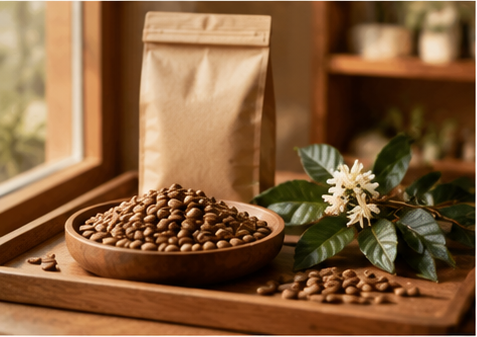
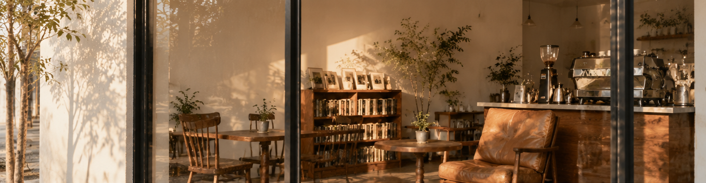
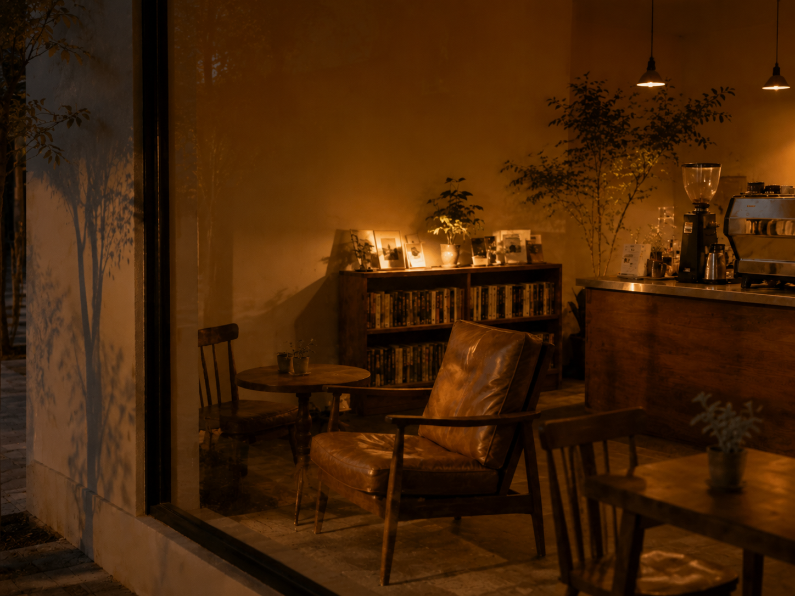
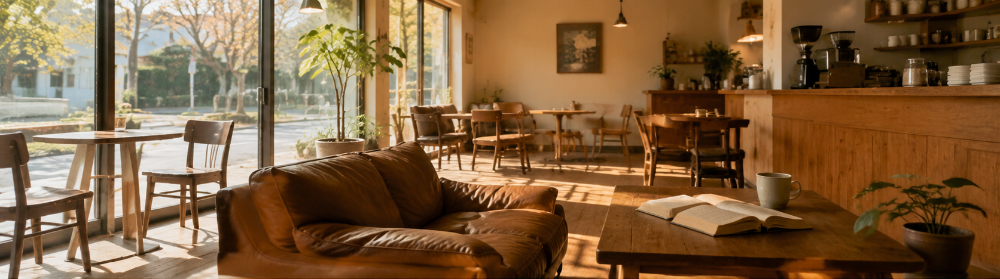
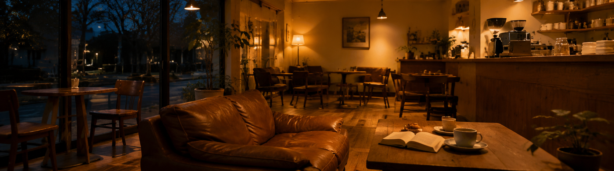
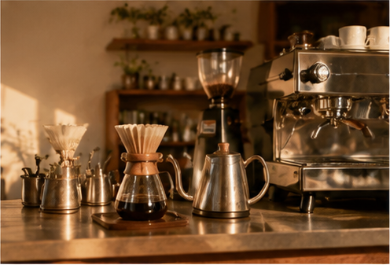
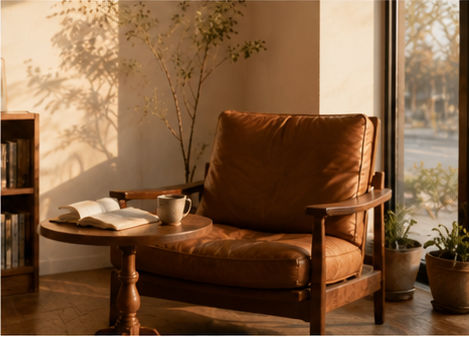
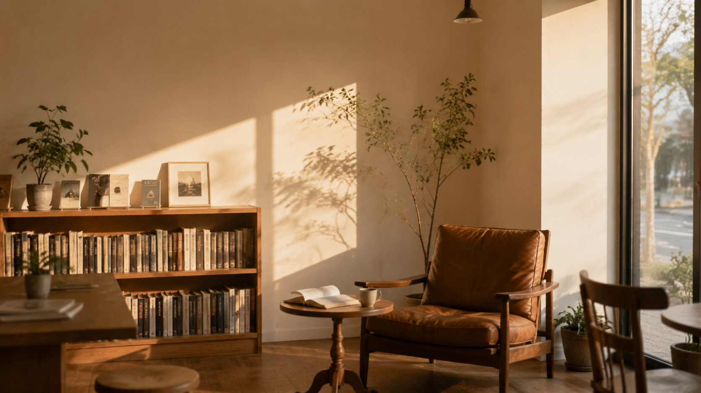

精选产地
每一季挑选风味清晰、可追溯的单一产区咖啡豆。
JINGYU COFFEE · SHANGHAI
藏在安远路旧街区的自烘焙咖啡馆。
白天有自然光，也有一把安静的椅子。
日间推荐：靠窗座位 · 轻烘焙 · 阅读与独处


窗边自然光与手冲咖啡
傍晚暖灯、手冲与甜点
A PLACE TO UNWIND
我们留下一张柔软的皮沙发、窗边的光和不被打扰的距离。无论白天还是傍晚，都可以慢慢坐一会儿。


午后自然光，留给慢慢坐下来的人
暖灯亮起后，一杯手冲配一份甜点

每一季挑选风味清晰、可追溯的单一产区咖啡豆。

用合适的水温与节奏，让一支豆子的风味慢慢展开。

靠窗的皮沙发与安静的距离，始终为你保留。

A QUIET CORNER
读几页书、写一封信，或与朋友安静聊天。这里不催促你，也不催促一杯咖啡。
VISIT US
上海市静安区南京西路 1686 号
静安寺附近（练习定位）
周一至周五 08:00–20:00
周末 09:00–21:00
2 / 7 号线静安寺站，步行约2分钟
021-5550-0826